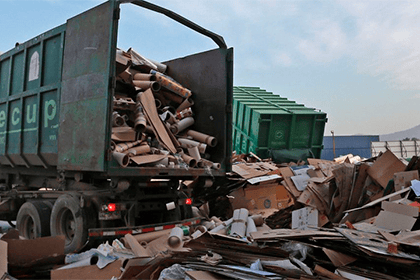
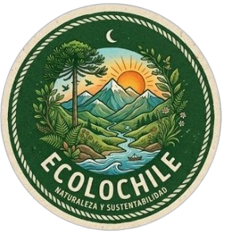
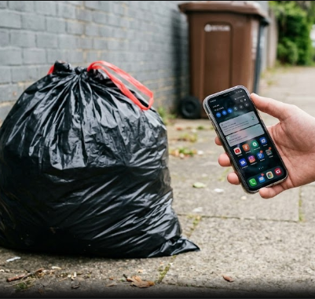
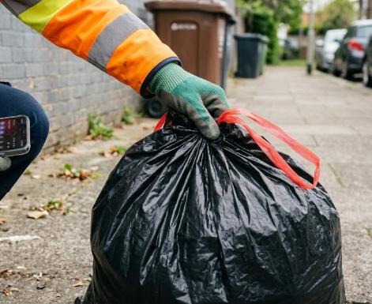
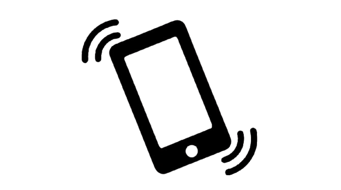
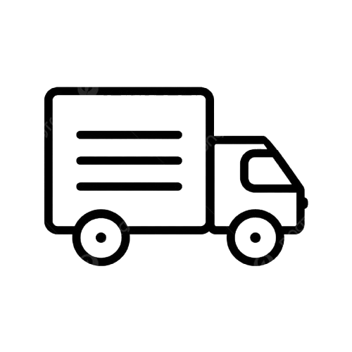

Residual waste management in Chile
The lack of infrastructure in Chile primarily affects how Chileans recycle, as there are typically few recycling zones, bins, or centers available. This frequently leads to trash piling up in urban areas—such as on sidewalks, in parks, around trees, and even on beaches or in natural settings. A 2018 report by the University of Chile revealed a total of 19.6 million tons of annual solid waste—55% industrial and 42% household (or municipal)—a figure that is unacceptable for a country like Chile. This situation impacts many Chilean citizens. On average, there are only between 4,000 and 6,000 recycling points or containers in Santiago—a very low number compared to the 3.6 to 4 million tons of waste generated in the city. Similarly, the 22,000 tons of waste generated in San Ramón stand in stark contrast to its mere 40 to 60 recycling points. This is a severe problem in Chile that will be difficult to address.

Who are we?
We are EcoloChile, a multidisciplinary team of young people committed to sustainable transformation and social innovation. We emerged from the urgent need to address one of the most critical and visible issues in our environment: the infrastructure crisis in waste management and the recycling deficit in our country's municipalities.

Project: App "BarrioLimpio"
Our project is based on cooperation driven by geographic proximity (geolocation). The application divides users into two ultra-simple profiles on the same map of the municipality:
The Neighbor (Generator)
Who it is: The person who wants to recycle but lacks the time, has limited mobility, or simply does not want to leave home.
Su acción: Junta sus botellas o cartones en una sola bolsa, abre la app y presiona un botón: "Bolsa Lista"

The Eco-Volunteer / Recycler
Who they are: The young scout, the eco-conscious neighbor with a car or tricycle, or the local grassroots recycler.
Su acción: Abre la app, ve el mapa de su sector con "puntos encendidos" y pasa a retirarlos para acumularlos o venderlos.

How our 3-step workflow works:
1. El vecino avisa

2. EL voluntario acepta

3. Retiro y validación

Our informative contact:
tomasmariqueo@liceovvh.cl